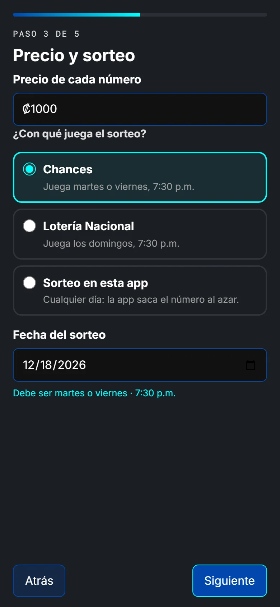
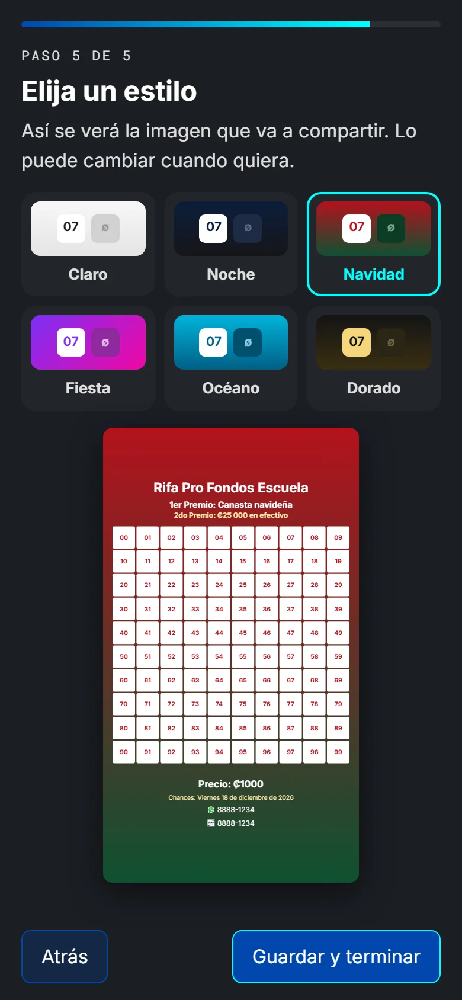
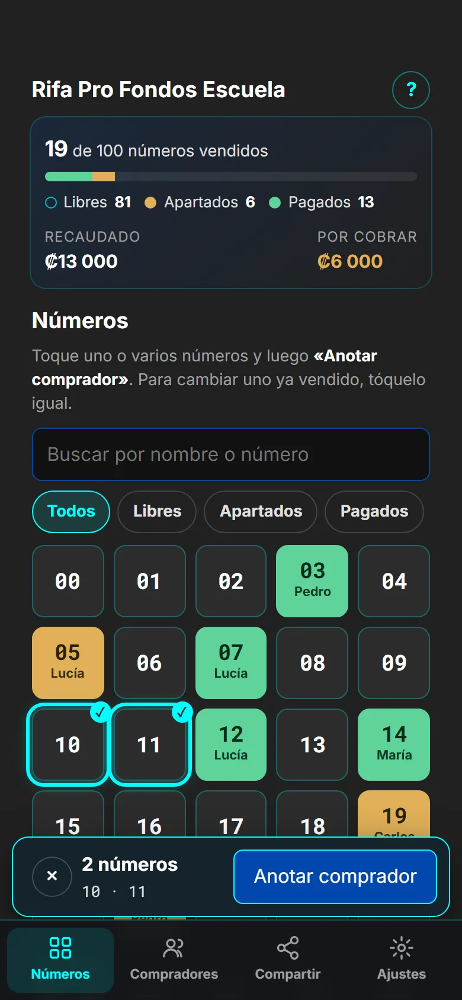
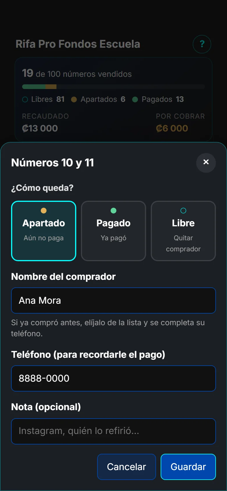
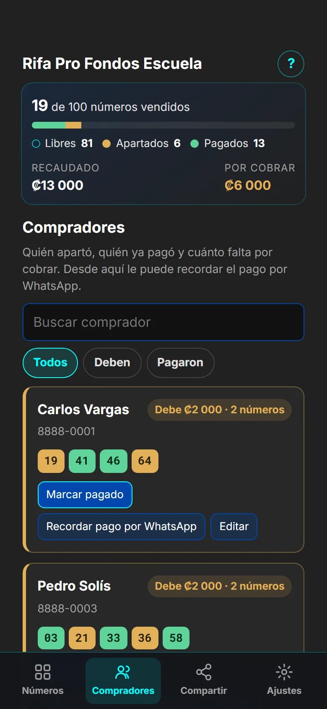
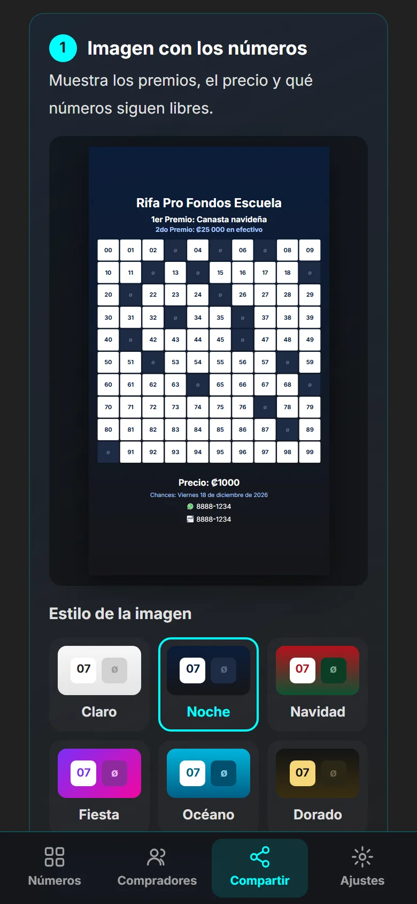
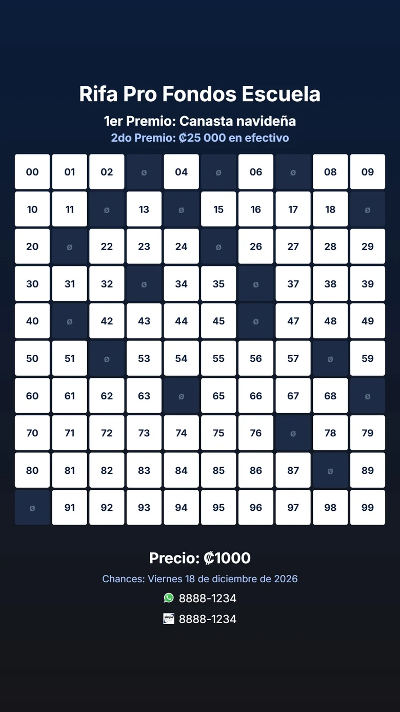
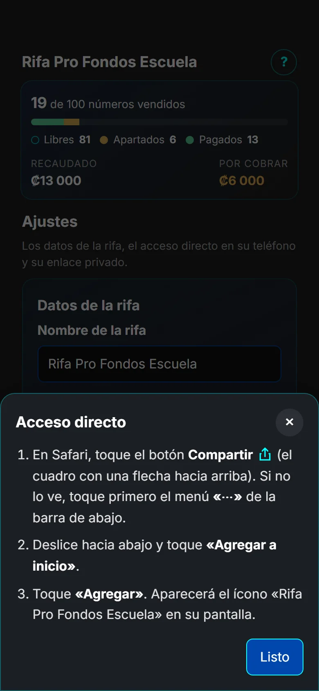

Quien organiza
#r/<enlace>
El enlace que le envío al preparar su rifa. Es la llave de su rifa: con él se anotan las ventas. No requiere cuenta ni contraseña.
Su rifa de 100 números (del 00 al 99) en el teléfono: anote quién aparta y quién paga, vea cuánto lleva recaudado y quién le falta por pagar, y cree en segundos la imagen y el mensaje para enviar a sus contactos por WhatsApp.
Guía para quien organiza una rifa y recibió su enlace. Todas las pantallas son de la herramienta real con datos de demostración.
#r/<enlace>
El enlace que le envío al preparar su rifa. Es la llave de su rifa: con él se anotan las ventas. No requiere cuenta ni contraseña.
Imagen + mensaje
A los compradores no se les manda el enlace: reciben la imagen con los números libres y el mensaje que la app arma sola.
01 · Primer ingreso
La primera vez que abre su enlace, un asistente le pregunta lo necesario, una cosa por pantalla.
Si ya tenía todo configurado, toque «Ya está lista, saltar». El asistente se puede abrir de nuevo cuando quiera desde Ajustes.


02 · Números
Los 100 números en una cuadrícula. Cada color dice cómo está el número, y los vendidos muestran el nombre de quien lo compró.


03 · Compradores
Cada comprador con todos sus números, cuánto debe y un botón para escribirle.

04 · Compartir
Las dos piezas se actualizan solas con cada venta: compártalas de nuevo cada vez que quiera anunciar los números que quedan.


05 · Ajustes
Todo lo de la rifa se puede corregir después, sin perder las ventas anotadas.
| Modalidad | Días permitidos | Cómo se elige el ganador |
|---|---|---|
| Chances | Martes o viernes | El número que salga en los Chances de ese día, 7:30 p.m. |
| Lotería Nacional | Domingo | El número que salga en la Lotería Nacional de ese domingo, 7:30 p.m. |
| Sorteo en la app | Cualquier día | La pestaña «Sorteo» saca un número al azar; un número que ya ganó no vuelve a salir. |
La rifa queda en la pantalla de inicio como una app, con su propio nombre, y abre directo en su rifa. El botón «Agregar a mi pantalla de inicio» de Ajustes muestra los pasos según su teléfono:
Toque Compartir (el cuadro con una flecha hacia arriba; en iOS recientes está dentro del menú «⋯»), luego «Agregar a inicio» y «Agregar». Si abrió el enlace desde WhatsApp, ábralo primero en Safari.
Toque el menú ⋮, luego «Agregar a la pantalla principal» o «Instalar app», y confirme. En muchos teléfonos la app ofrece un botón para hacerlo con un solo toque.

06 · Preguntas
Toque el número, elija «Libre» y guarde. Luego anote al comprador en el número correcto.
En la nube. Puede abrir su enlace desde otro teléfono o computadora y verá lo mismo.
Sí: cada venta se guarda al momento en la nube, así nadie trabaja con números viejos.
Sí. Comparta su enlace solo con personas de confianza: verán y podrán anotar lo mismo que usted.
Cuando quiera anunciar los números que quedan. La imagen y el mensaje siempre salen con las ventas al día.
Después de la fecha acordada el enlace se archiva. Antes de eso puede descargar la lista completa para Excel.
07 · Su rifa
Escríbame con el nombre de la rifa, los premios y la fecha del sorteo, y le preparo su enlace. Desde ese momento todo lo demás lo maneja usted desde su teléfono.
Escríbame por WhatsApp +506 6200 5921Todas las capturas se tomaron sobre la app real con datos de demostración: nombres, teléfonos y enlaces son ficticios. Cada cambio de la herramienta queda registrado en Parches y Noticias.